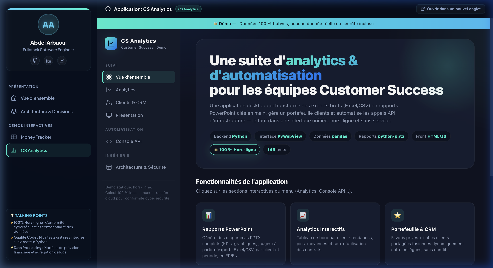
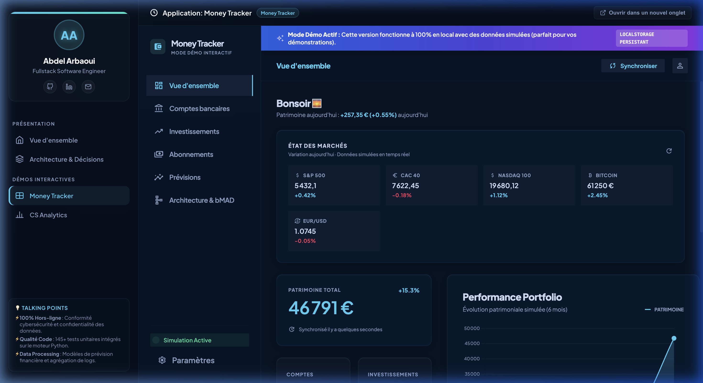
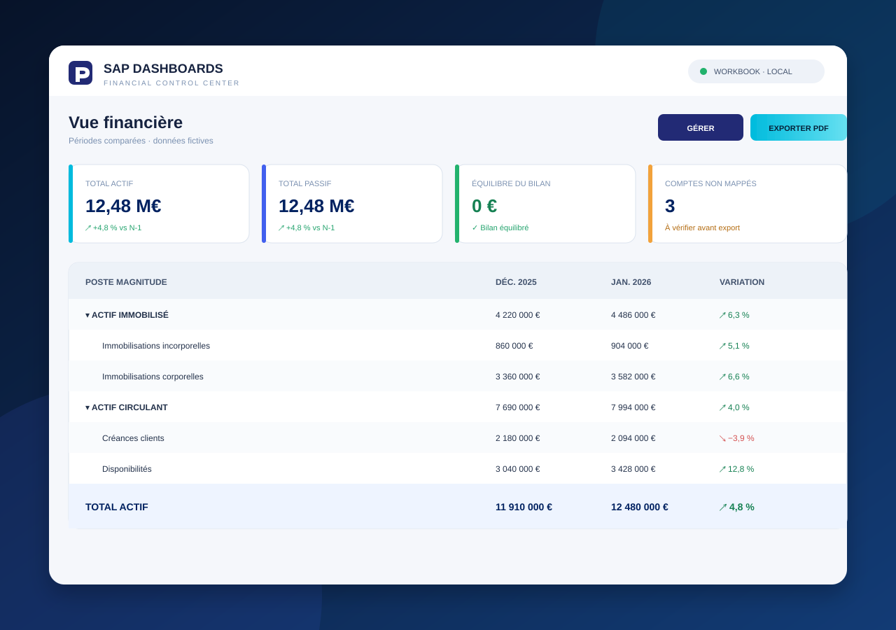

Sources
Données brutes
CSV · Excel · APIs
Customer Success Ops · Product · Data
Ce portfolio présente ma façon d’analyser un problème, de concevoir une solution et d’aller jusqu’à un produit fonctionnel, testable et clair.
CSV · Excel · APIs
Python · JavaScript
KPIs · Forecast · PPTX
FIG. 01 Un système utile rend le flux visible, pas la complexité.
02 / Compétences démontrées
Ces réalisations montrent comment je relie compréhension métier, développement produit et présentation de la donnée.
Identifier les frictions, les données disponibles, les contraintes et la décision attendue.
Transformer un besoin en workflow local, modulaire, contrôlable et testable.
Hiérarchiser les métriques pour faire émerger une lecture et une prochaine action claires.
03 / Projets sélectionnés
Chaque démonstration rend mes choix de conception et mon niveau de finition directement observables.

Customer Success · Analytics · Reporting
Une suite desktop qui transforme des exports dispersés en analyses exploitables, rapports PowerPoint et actions d’infrastructure sécurisées.

Finance personnelle · Local-first
Un cockpit financier hors-ligne pour suivre comptes, investissements, abonnements et scénarios d’intérêts composés sans exposer de données personnelles.

Finance · Excel · Automatisation
Un classeur Excel autonome qui transforme des balances SAP en bilan Magnitude multi-périodes, avec mapping hiérarchique, contrôles et export PDF.
04 / Ma manière de travailler
Données, contraintes, risques et décision attendue.
Règles explicites, modules simples et états visibles.
Une interface alignée sur le travail, pas sur la technologie.
Tests, erreurs compréhensibles et démonstration concrète.
05 / Poursuivre l’échange
Je peux détailler les arbitrages produit, les choix techniques et les enseignements tirés de chaque réalisation.